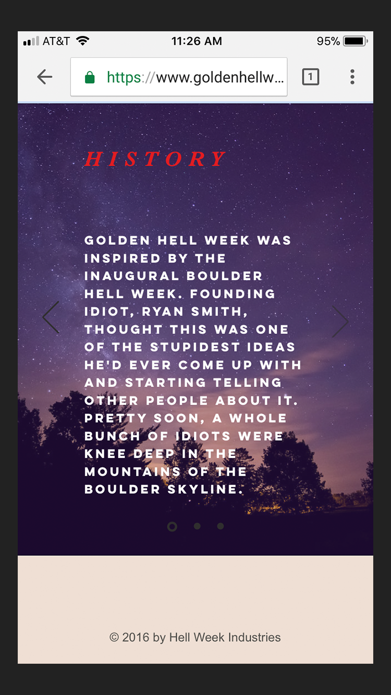
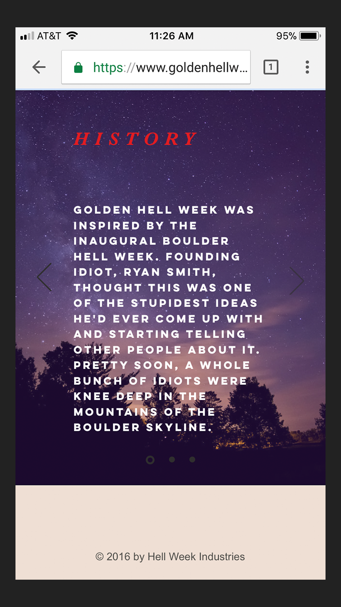

Projects
My friend, Quinn Carrasco came to me with his website for his Golden Hell Week running event. He told me about an idea he had for a feature he wanted to add to his website.
Upon discussing Quinn's idea with him and taking a closer look at his website's current functionality and its interface, I told him an entire website re-design would be beneficial and would help incorporate the feature he wanted to add.
He agreed to let me work out the kinks and design something that would be easier to navigate as well as allow for expansion of his event in the future.
This website is still in development.

Golden Hell Week is an unofficial, week-long trail running event that takes place the last week of October every year in Golden, Colorado. Quinn started this event in 2016.
There are five different challenging trail running routes participants have to complete during Golden Hell Week. They can complete them in any order or at any time so long as they do so within the specified 5-day period. Whichever participant's combined times for these 5 runs is fastest, wins.
Routes that participants are supposed to run during Golden Hell Week can be viewed through a popular app called, Strava. This app records each participant's distance run, their finish time and whether they ran the correct route.
Currently, Quinn has been manually entering runner's Strava data from Golden Hell Week into an Excel document which he then made viewable on his website. Because of the inconvenience of having to manually enter this data, Quinn wanted to use an API to pull the Strava data into his own website. This would allow him to build an interactive feature within his site that would keep track of participant's Strava data for him without the need to enter it manually.
Below are screenshots of the mobile version of Quinn's website before a re-design.


 

Below are screenshots of the desktop version of Quinn's website before a re-design.

I felt both the mobile and desktop versions lacked thoughtful design. There is no color theme, the fonts don't work well together and are too large when the phone is turned sideways, negative space lacks strategic placement, some information is cut off the side of the screen, it's not clear what you actually do during Golden Hell Week from the Home or About pages, and the title, "Golden Hell Week" doesn't draw me in.
Quinn initially asked me to design a way to integrate the Strava feature into his current website layout so that he could have a developer use my design to build it. But after talking with him, I explained why re-designing the entire website would be beneficial.
I began considering the possibilities for a re-design based on the future he saw with his annual event. He was already in the process of considering starting a "Golden Hell Week" in a couple other towns, and hoped to continue expanding in the years to come.
One of my immediate thoughts was to change the name from "Golden Hell Week" to "Hell Week" and to allow visitors of his site to choose which Hell Week they wanted to navigate to via a dropdown menu of Hell Weeks in different towns on the home page.
I wanted to think more about how I might organize this website before meeting with Quinn again. Below is a sitemap I sketched displaying the flow of the pages.

After talking with Quinn it sounded like he agreed that his website should exist as Hell Week with each location's Hell Week as a navigable page.

Although Quinn had performed his own research prior to building his current website, I wanted to do a little more in order to find out what types of similar sites already exist and how they're laid out. I decided to browse through all sorts of race websites, running event websites and anything else I could find that might function in a similar way to Quinn's website. Luckily as a runner myself, I'd been to enough running-related event websites that I already had an idea of how they were laid out. This helped me avoid some of the logistical problems that might have come up otherwise.
Quinn and I already knew the small population of participants of Golden Hell Week. They are all close friends and trail runners. I told Quinn it would be beneficial to talk with participants who had been to Quinn's website in order to find out what other pain points exist. Quinn said he'd already done that but I decided to have a few of them look at it as well and get back to me with anything they felt lacked user friendliness. I also explained to Quinn that user testing throughout the design process can always help uncover hidden issues.
One last thing I wanted to do was learn more about how APIs work. As a designer, I know it's important to be able to communicate with everyone involved in building a product. If Quinn were to ask me to work with a developer in building his website, I'd want to be able to communicate my design ideas regarding APIs to the developer.
Because Golden Hell Week is a small, unofficial event, Quinn isn't making any profit off of it. He puts it on every year simply because of how excited fellow trail runners around Golden are about it. But Quinn did say he has ideas for the future about turning it into something bigger and potentially profitable. Because of this I felt it was important to build a website that would "sell" even though he wasn't currently trying to actually sell anything. If Quinn wanted to continue to put his event on every year and turn it into something bigger down the road, the ability to draw trail runners in was important.
With this in mind, I really wanted to make sure I captured the vibe of Golden Hell Week within Quinn's website. Although I have not participated in Golden Hell Week myself yet, I knew it was brutal but based around a sense of community.
Quinn is also a huge part of the Golden Mountain Runners run club. A majority of runners who participate in Golden Hell Week also run with the Golden Mountain Runners. This group of people are very welcoming and psyched on trail running with one another. This is the group of people Quinn's website needed to speak emotionally to.
Below are a few sketches of ideas for the home page which would help set the tone for the rest of the website's design.
I decided to use the sketches above to build some mockups. You can view these below.
Below are mobile and desktop mockups of one of my designs. I would encourage Quinn to have a logo made which would replace "Hell Week" at the top. I think the dark feel gives it the "brutal" vibe that describes how difficult Golden Hell Week is. Golden Hell Week also falls during the week of Halloween every year. The two aren't completely related, but Quinn did mention this as part of the excitement for people, so an orange color theme coupled with a dark color might interest Quinn.

Below is another idea for the home page. I used earthier colors that relate well to trail running.
My third idea is a bit more terrifying-looking than the other two ideas. While keeping mobile-first in mind, I've included an extra sentence next to the hamburger on the desktop version that isn't on the mobile version. It will be important to find out what information Quinn feels is necessary on the home screen and what isn't.
I'm not sure whether Quinn will like the more sophisticated look of the first design or the illustrated look of the other two designs. If he likes the idea of having a photo of a runner in the background like in the first image, I could use an actual photo from a previous year's Golden Hell Week or I would be willing to take some photos during this year's Golden Hell Week.
Below are mockups of how I think the Strava API could function within the website.

At this point it was time to talk with Quinn about my designs for his website. Once I got an okay, I would either build all of his website with the exception of the Strava API function, or he would hire someone to build the entire website for him.